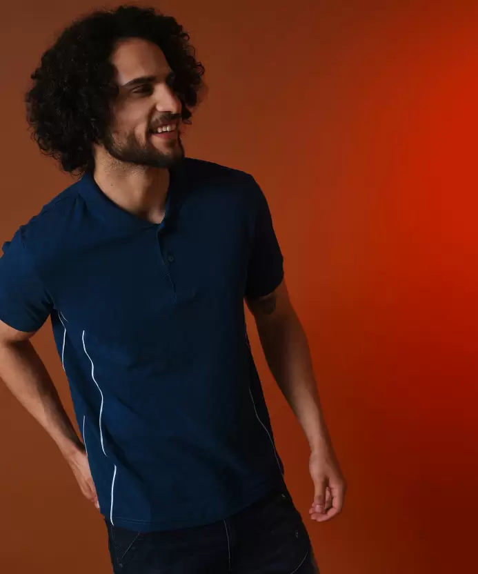

HOME
FLIPKART A AMAZON home, or domicile, is a space used as a permanent or semi-permanent residence for one or many humans, and sometimes various companion animals. It is a fully or semi sheltered space and can have both interior and exterior aspects to it. Homes provide sheltered spaces, for instance rooms, where domestic activity can be performed such as sleeping, preparing food, eating and hygiene as well as providing spaces for work and leisure such as remote working, studying and playing.A home, or domicile, is a space used as a permanent or semi-permanent residence for one or many humans, and sometimes various companion animals. It is a fully or semi sheltered space and can have both interior and exterior aspects to it. Homes provide sheltered spaces, for instance rooms, where domestic activity can be performed such as sleeping, preparing food, eating and hygiene as well as providing spaces for work and leisure such as remote working, studying and playing.A home, or domicile, is a space used as a permanent or semi-permanent residence for one or many humans, and sometimes various companion animals. It is a fully or semi sheltered space and can have both interior and exterior aspects to it. Homes provide sheltered spaces, for instance rooms, where domestic activity can be performed such as sleeping, preparing food, eating and hygiene as well as providing spaces for work and leisure such as remote working, studying and playing.A home, or domicile, is a space used as a permanent or semi-permanent residence for one or many humans, and sometimes various companion animals. It is a fully or semi sheltered space and can have both interior and exterior aspects to it. Homes provide sheltered spaces, for instance rooms, where domestic activity can be performed such as sleeping, preparing food, eating and hygiene as well as providing spaces for work and leisure such as remote working, studying and playing.A home, or domicile, is a space used as a permanent or semi-permanent residence for one or many humans, and sometimes various companion animals. It is a fully or semi sheltered space and can have both interior and exterior aspects to it. Homes provide sheltered spaces, for instance rooms, where domestic activity can be performed such as sleeping, preparing food, eating and hygiene as well as providing spaces for work and leisure such as remote working, studying and playing.A home, or domicile, is a space used as a permanent or semi-permanent residence for one or many humans, and sometimes various companion animals. It is a fully or semi sheltered space and can have both interior and exterior aspects to it. Homes provide sheltered spaces, for instance rooms, where domestic activity can be performed such as sleeping, preparing food, eating and hygiene as well as providing spaces for work and leisure such as remote working, studying and playing.A home, or domicile, is a space used as a permanent or semi-permanent residence for one or many humans, and sometimes various companion animals. It is a fully or semi sheltered space and can have both interior and exterior aspects to it. Homes provide sheltered spaces, for instance rooms, where domestic activity can be performed such as sleeping, preparing food, eating and hygiene as well as providing spaces for work and leisure such as remote working, studying and playing.A home, or domicile, is a space used as a permanent or semi-permanent residence for one or many humans, and sometimes various companion animals. It is a fully or semi sheltered space and can have both interior and exterior aspects to it. Homes provide sheltered spaces, for instance rooms, where domestic activity can be performed such as sleeping, preparing food, eating and hygiene as well as providing spaces for work and leisure such as remote working, studying and playing.A home, or domicile, is a space used as a permanent or semi-permanent residence for one or many humans, and sometimes various companion animals. It is a fully or semi sheltered space and can have both interior and exterior aspects to it. Homes provide sheltered spaces, for instance rooms, where domestic activity can be performed such as sleeping, preparing food, eating and hygiene as well as providing spaces for work and leisure such as remote working, studying and playing.A home, or domicile, is a space used as a permanent or semi-permanent residence for one or many humans, and sometimes various companion animals. It is a fully or semi sheltered space and can have both interior and exterior aspects to it. Homes provide sheltered spaces, for instance rooms, where domestic activity can be performed such as sleeping, preparing food, eating and hygiene as well as providing spaces for work and leisure such as remote working, studying and playing.
MEN
DOC MAIL ME Men Fashion is a form of self-expression and autonomy at a particular period and place and in a specific context, of clothing, footwear, lifestyle, accessories, makeup, hairstyle, and body posture.[1] The term implies a look defined by the fashion industry as that which is trending. Everything that is considered fashion is available and popularized by the fashion system (industry and media).Fashion is a form of self-expression and autonomy at a particular period and place and in a specific context, of clothing, footwear, lifestyle, accessories, makeup, hairstyle, and body posture.[1] The term implies a look defined by the fashion industry as that which is trending. Everything that is considered fashion is available and popularized by the fashion system (industry and media).Fashion is a form of self-expression and autonomy at a particular period and place and in a specific context, of clothing, footwear, lifestyle, accessories, makeup, hairstyle, and body posture.[1] The term implies a look defined by the fashion industry as that which is trending. Everything that is considered fashion is available and popularized by the fashion system (industry and media).
WOMEN

BEE CONTACT ME Women Fashion is a form of self-expression and autonomy at a particular period and place and in a specific context, of clothing, footwear, lifestyle, accessories, makeup, hairstyle, and body posture.[1] The term implies a look defined by the fashion industry as that which is trending. Everything that is considered fashion is available and popularized by the fashion system (industry and media).Fashion is a form of self-expression and autonomy at a particular period and place and in a specific context, of clothing, footwear, lifestyle, accessories, makeup, hairstyle, and body posture.[1] The term implies a look defined by the fashion industry as that which is trending. Everything that is considered fashion is available and popularized by the fashion system (industry and media).Fashion is a form of self-expression and autonomy at a particular period and place and in a specific context, of clothing, footwear, lifestyle, accessories, makeup, hairstyle, and body posture.[1] The term implies a look defined by the fashion industry as that which is trending. Everything that is considered fashion is available and popularized by the fashion system (industry and media).
){kind=link}
KIDS

DOC DOWNLOAD Kids Fashion is a form of self-expression and autonomy at a particular period and place and in a specific context, of clothing, footwear, lifestyle, accessories, makeup, hairstyle, and body posture.[1] The term implies a look defined by the fashion industry as that which is trending. Everything that is considered fashion is available and popularized by the fashion system (industry and media).Fashion is a form of self-expression and autonomy at a particular period and place and in a specific context, of clothing, footwear, lifestyle, accessories, makeup, hairstyle, and body posture.[1] The term implies a look defined by the fashion industry as that which is trending. Everything that is considered fashion is available and popularized by the fashion system (industry and media).Fashion is a form of self-expression and autonomy at a particular period and place and in a specific context, of clothing, footwear, lifestyle, accessories, makeup, hairstyle, and body posture.[1] The term implies a look defined by the fashion industry as that which is trending. Everything that is considered fashion is available and popularized by the fashion system (industry and media).